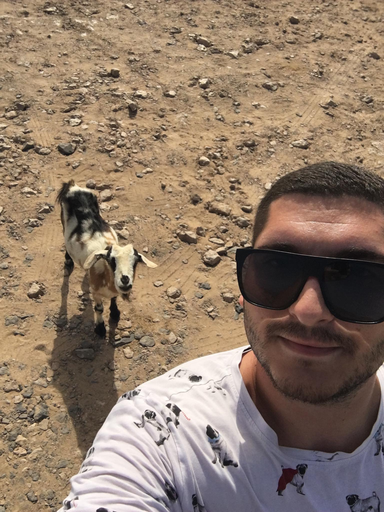

Simon Makso

Summary
I`am a harworking individual, with experience in administration.I work in
a company who make premium metal components.
Education
- Economic High School Senta-As a financial administrator
-
Subotica Tech - College of Applied Sciences-Engineering
Management/Didn`t finished, left the university after the 2. year
Work Experience
-
Medialink l.t.d-administrative assistant 2019-2021
- Managed incoming and outgoing mail and correspondence
-
To monitor small and wholesale shops`price change in the Balkan
region
-
gather and forward the information i gained to the other workers
-
Idas-Metal l.t.d-administrator of the technology-2021-
- Manage incoming and outgoing mail and correspondence
- Manage incoming information about changed techical drawings
- manage transport
- communikate with the other corporate departments
Skills
- Microsoft Office Suite
- state accredited language examination certificate English B2
Other: